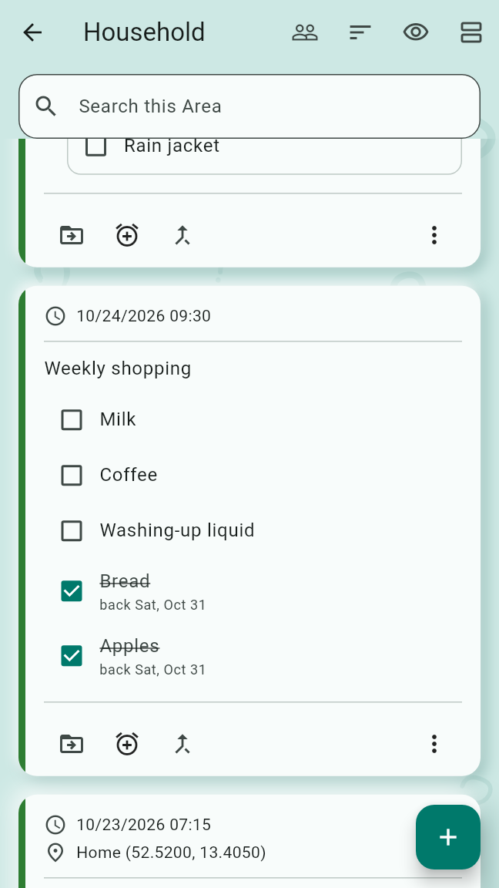
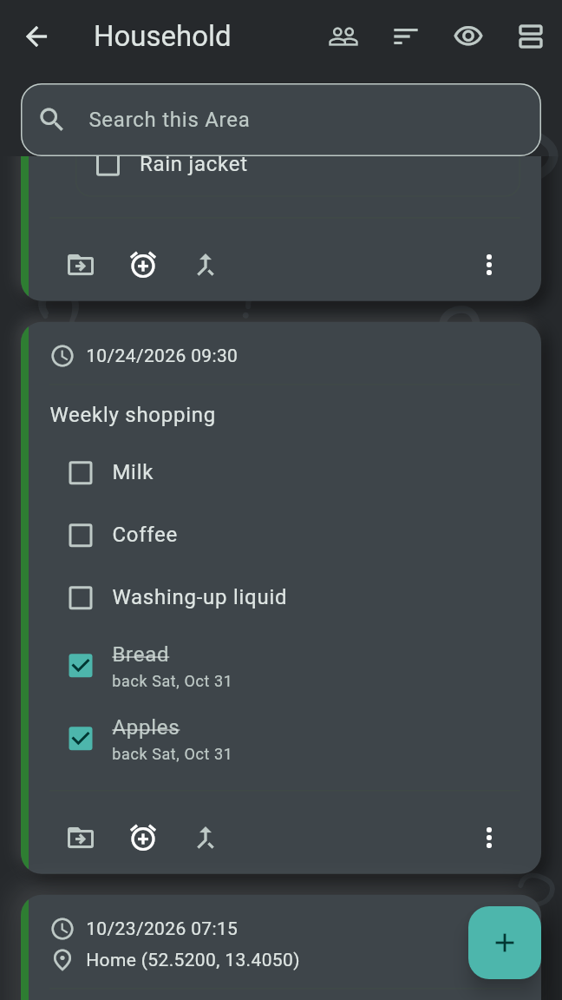
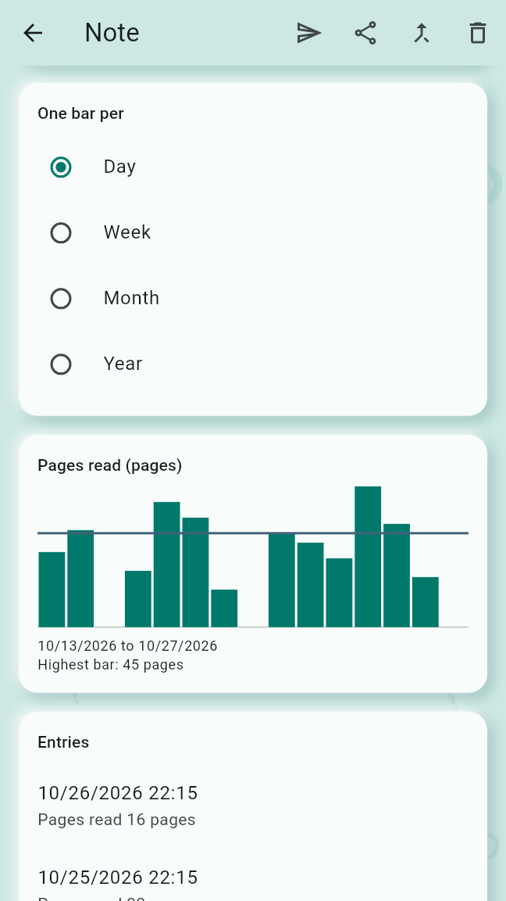
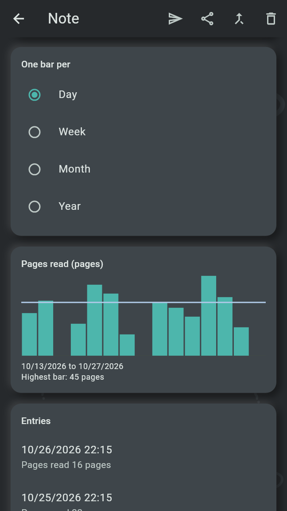

A Note can become a Checklist, a Shopping List or a Tally, and it can spawn a Session or a Frog besides Routines and Reminders. A Note is at most one of a Tally, a Checklist and a Shopping List.
A Checklist is a Note whose Lines are checked off, such as a packing list. Make it a Checklist is in the ⋮ of the Note's card and in the Note's editor. The Note's first line stays its text, as title; every other line that is not blank becomes a Line. A line that starts with a space or a tab goes under the Line above, and one that starts with "✓ " is checked. A Note made a Checklist leaves Unsorted.
In a Shared Area anyone with a role adds and checks Lines; renaming, moving and deleting a Line stay with the author of the Note or of the Line and the Managers.
A Routine or Reminder spawned from a Checklist starts each Occurrence with every Line unchecked, on all of your own Devices and for everyone in a Shared Area alike. Its row on the Agenda lists the Lines under its title, checked as for that Occurrence, and they can be checked there. The Occurrence is Done once every Line is checked for it, by anyone, or when its box is checked off. The Note's card and editor show the Lines as checked for the Occurrence it is on now.
A Shopping List is a Note whose Lines come back a while after they are checked, such as the weekly shopping. Make it a Shopping List is in the ⋮ of the Note's card and in the Note's editor. As for a Checklist, the first line stays the title and every other line becomes a Line; Shopping Lists have no groups, and a line marked "✓ " is struck.


Settings under "Shopping Lists on the Agenda" choose how today's Agenda shows them, on this Device only:
The rows come after today's all-day Occurrences; a tap opens the list. A Routine or Reminder spawned from a Shopping List is Done only when checked off.
Add to a Shopping List in the ⋮ of the capture screen makes each line of the capture a Line of the list picked, and keeps no Note. A recording gives the lines of its Transcript. When it is offered is described in Capture and sort.
A Tally is a Note that records how much of something was done, such as push-ups, pages read or minutes of video. Make it a Tally in the ⋮ of the Note's card, or of the capture screen, opens the page of its first field; Save makes the Note a Tally, and it leaves Unsorted.
A field has a Name, a Unit, an optional Target, prefilled in every new entry, and how "A day with several entries counts": Their sum or The largest, which follows the kind of unit until it is picked. The unit is a known one of time, distance, mass, speed, temperature or angle, or Another unit as typed, such as "pages". Once entries hold values for a field, its kind of unit stays. Settings under "Units" choose whether this Device shows the known units in metric or imperial, or as the phone's region does; the values are stored in metric either way. Hide field takes a field out of view; its values stay stored and come back with Show field again.
The Tally shows in the Note's editor: its fields, Add entry and Add field, then "One bar per" Day, Week, Month or Year, one chart per field shown, and the entries, newest first. Add entry is also in the ⋮ of the Tally's card.


A Session is a Routine that picks a few Tallies from its pool for each Occurrence. It is spawned as a Routine is, with Session under the alarm clock, "Routine, Reminder, Frog or Session", on a Note's card or the capture screen, and has a Routine's schedule, Re-nag, Escalation, Streak and Adherence. On top of the schedule, its editor holds:
Today's row of a Session on the Agenda lists its picks under its title, in the order picked, each Tally's name with its targets, such as "Push-ups 20 times", struck through once it has an entry. A tap on a pick opens its entry form, prefilled with the targets; saving records it for this Occurrence. Each pick without an entry offers Another one while the pool holds a Tally not picked. The Occurrence is Done once every pick has an entry, by anyone, or when its box is checked off; removing an entry undoes that. Tomorrow and the days after show only how many it picks, such as "Picks 3 Tallies": the picks are made on the day. They are the same on all of your own Devices and for everyone in a Shared Area.
A Frog is a Note's job with no time, done once. Frog under the alarm clock on a Note's card or the capture screen makes one at once; a Note has one open Frog at a time. A Frog never rings and is never Missed; something that has to ring is a Reminder.
Under today's Occurrences, the Agenda's section "Eat a frog" offers two open Frogs a day, and eating one is enough. Another one swaps a Frog for the next. Once one is checked off, only that one shows for the day, struck through; unchecked, the others show again. The pick is the same on all of your own Devices. A tap on a Frog opens its Note; the heading opens the Frog view.
The Frog view lists the open Frogs, oldest first, each with its box, and below them the folded "Done" section with those checked off, the latest first, each with its date ("Done on …"); its box unchecks it. A long press offers Delete, which asks once; the Frog goes to the Trash and its Note stays. In a Shared Area a Manager makes and deletes Frogs, and anyone with a role checks them off; a Frog one person eats is eaten for everyone.